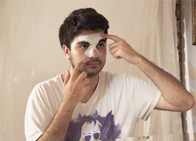

<!--START SLIDE-->

<div>
  <div class="table-cell-left">
    <h2>Apply and Smooth.</h2>
    <div style="width:360px;">
Continue to apply plaster strips to your face, connecting all the parts of the X. Be carefeul around your eyes.<br><br>
Tip: Really smooth the plaster with your fingers as you go.

</div>
  </div>
  <div class="table-cell-right">  </div>
</div>
<!--END SLIDE 1-->